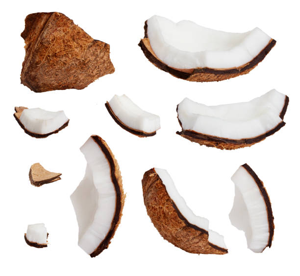
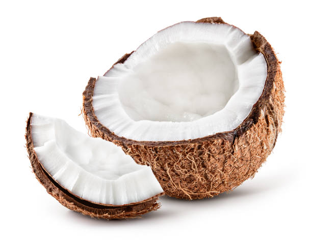
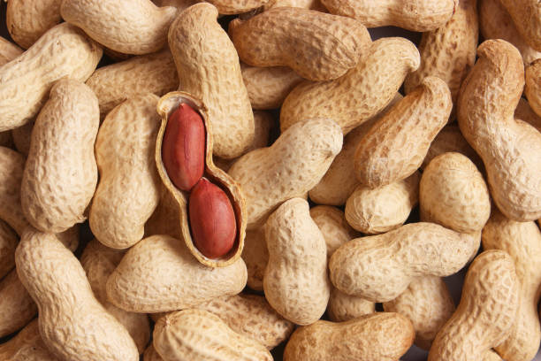
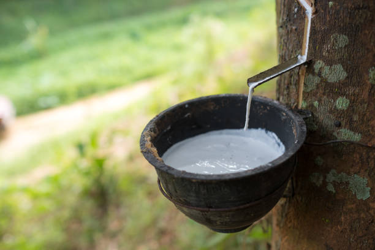
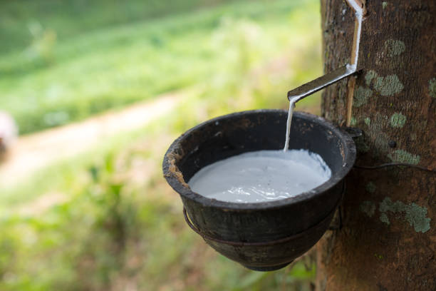
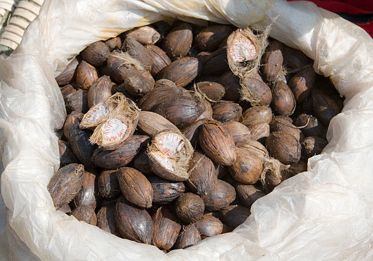
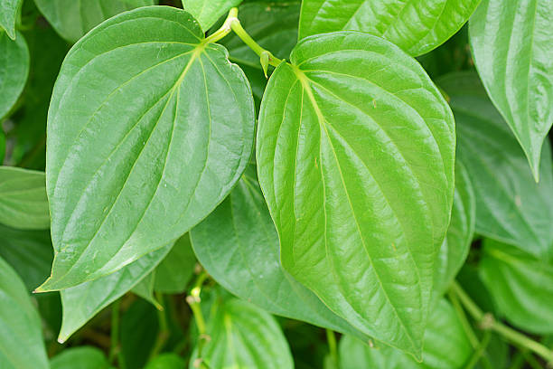
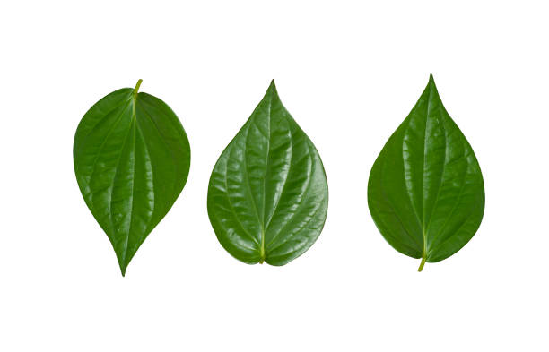

1. COCONUT / 1.नारियल


Coconuts in the Andaman and Nicobar Islands are primarily grown year-round, with peak production during the monsoon season from May to September. Kerala has the largest market share, with significant cultivation. Coconuts prefer sandy, well-drained soils with a pH of 5.0 to 8.0 and thrive in temperatures between 27-32°C. They are high in healthy fats, fiber, and essential vitamins. It takes about 5-7 years to yield fruit, requiring moderate resources like water and fertilizers. Demand is particularly high in states such as Kerala, Tamil Nadu, and West Bengal, where they are a staple ingredient.
अंडमान और निकोबार द्वीप समूह में नारियल मुख्य रूप से साल भर उगाए जाते हैं, मई से सितंबर तक मानसून के मौसम में अधिकतम उत्पादन होता है। केरल में सबसे बड़ी बाजार हिस्सेदारी है, जहाँ काफी खेती होती है। नारियल रेतीली, अच्छी जल निकासी वाली मिट्टी को पसंद करते हैं जिसका pH 5.0 से 8.0 होता है और 27-32 डिग्री सेल्सियस के बीच के तापमान में पनपते हैं। इनमें स्वस्थ वसा, फाइबर और आवश्यक विटामिन अधिक होते हैं। फल देने में लगभग 5-7 साल लगते हैं, जिसके लिए पानी और उर्वरक जैसे मध्यम संसाधनों की आवश्यकता होती है। केरल, तमिलनाडु और पश्चिम बंगाल जैसे राज्यों में इसकी मांग विशेष रूप से अधिक है, जहाँ वे एक मुख्य घटक हैं।
2. GROUNDNUT / 2.मूंगफली


Groundnuts in the Andaman and Nicobar Islands are primarily grown during the Kharif season, from June to September. They are mostly cultivated in states like Gujarat and Andhra Pradesh, which also hold the largest market share. Groundnuts prefer sandy, loamy soils with good drainage and a pH of 6.0 to 7.0. They thrive at temperatures between 20-30°C and are rich in protein, healthy fats, and vitamins. It takes about 4-5 months to harvest groundnuts, requiring moderate resources such as water and fertilizers. Demand is higher in states like Gujarat, Maharashtra, and Tamil Nadu, where they are widely used in cooking and snacks.
अंडमान और निकोबार द्वीप समूह में मूंगफली मुख्य रूप से जून से सितंबर तक खरीफ मौसम के दौरान उगाई जाती है। इनकी खेती ज़्यादातर गुजरात और आंध्र प्रदेश जैसे राज्यों में की जाती है, जो सबसे बड़ा बाज़ार हिस्सा भी रखते हैं। मूंगफली को अच्छी जल निकासी वाली रेतीली, दोमट मिट्टी और 6.0 से 7.0 के पीएच वाले क्षेत्र पसंद हैं। वे 20-30 डिग्री सेल्सियस के बीच के तापमान पर पनपते हैं और प्रोटीन, स्वस्थ वसा और विटामिन से भरपूर होते हैं। मूंगफली की कटाई में लगभग 4-5 महीने लगते हैं, जिसके लिए पानी और उर्वरक जैसे मध्यम संसाधनों की आवश्यकता होती है। गुजरात, महाराष्ट्र और तमिलनाडु जैसे राज्यों में इसकी मांग अधिक है, जहाँ इनका व्यापक रूप से खाना पकाने और नाश्ते में उपयोग किया जाता है।
3. COTTON / 3.कपास


Cotton in the Andaman and Nicobar Islands is primarily grown during the Kharif season, from June to September. While not a major cotton-producing region, the largest market share is held by states like Gujarat and Maharashtra. Cotton prefers well-drained, loamy to sandy soils with a pH of 6.0 to 7.5. It thrives in temperatures between 20-30°C. The growing period is about 5-6 months, requiring moderate water and fertilizers. Demand is particularly high in states like Gujarat, Maharashtra, and Tamil Nadu, where cotton is essential for textile production and various industries.
अंडमान और निकोबार द्वीप समूह में कपास मुख्य रूप से जून से सितंबर तक खरीफ मौसम के दौरान उगाया जाता है। हालांकि यह कोई प्रमुख कपास उत्पादक क्षेत्र नहीं है, लेकिन इसका सबसे बड़ा बाजार हिस्सा गुजरात और महाराष्ट्र जैसे राज्यों के पास है। कपास को अच्छी जल निकासी वाली, दोमट से लेकर रेतीली मिट्टी पसंद है जिसका pH 6.0 से 7.5 है। यह 20-30 डिग्री सेल्सियस के बीच के तापमान में पनपता है। इसकी वृद्धि अवधि लगभग 5-6 महीने है, जिसके लिए मध्यम पानी और उर्वरकों की आवश्यकता होती है। गुजरात, महाराष्ट्र और तमिलनाडु जैसे राज्यों में इसकी मांग विशेष रूप से अधिक है, जहाँ कपड़ा उत्पादन और विभिन्न उद्योगों के लिए कपास आवश्यक है।
4. RUBBER / 4.रबर
 

Rubber in the Andaman and Nicobar Islands is primarily grown during the monsoon season, from May to September. Kerala holds the largest market share for rubber cultivation and sales in India. Rubber trees prefer well-drained, loamy soils with a pH of 4.5 to 6.5. They thrive in temperatures between 25-35°C and require adequate rainfall. It takes about 6-7 years to begin tapping rubber, needing significant resources like water and fertilizers. Demand is highest in states such as Kerala, Tamil Nadu, and Karnataka, where rubber is vital for the tire and latex industries.
अंडमान और निकोबार द्वीप समूह में रबर मुख्य रूप से मई से सितंबर तक मानसून के मौसम में उगाया जाता है। भारत में रबर की खेती और बिक्री के लिए केरल का बाजार सबसे बड़ा है। रबर के पेड़ 4.5 से 6.5 के पीएच के साथ अच्छी तरह से सूखा, दोमट मिट्टी पसंद करते हैं। वे 25-35 डिग्री सेल्सियस के बीच के तापमान में पनपते हैं और उन्हें पर्याप्त वर्षा की आवश्यकता होती है। रबर का दोहन शुरू करने में लगभग 6-7 साल लगते हैं, जिसके लिए पानी और उर्वरक जैसे महत्वपूर्ण संसाधनों की आवश्यकता होती है। केरल, तमिलनाडु और कर्नाटक जैसे राज्यों में मांग सबसे अधिक है, जहां टायर और लेटेक्स उद्योगों के लिए रबर महत्वपूर्ण है।
5. ARECANUT / 5.सुपारी


Arecanut in the Andaman and Nicobar Islands is primarily grown during the monsoon season, from May to September. The largest market share for arecanut is held by Karnataka, which is also its main cultivation state. Arecanut thrives in well-drained, loamy soils with a pH of 5.5 to 7.5. Optimal growth occurs in temperatures between 25-35°C. It takes about 4-6 years to start yielding fruit, requiring moderate water and fertilizers. Demand is particularly high in states like Karnataka, Kerala, and Assam, where arecanut is widely used in traditional practices and as a chewing ingredient.
अंडमान और निकोबार द्वीप समूह में सुपारी मुख्य रूप से मई से सितंबर तक मानसून के मौसम में उगाई जाती है। सुपारी के लिए सबसे बड़ा बाजार हिस्सा कर्नाटक के पास है, जो इसकी मुख्य खेती वाला राज्य भी है। सुपारी 5.5 से 7.5 के पीएच के साथ अच्छी तरह से सूखा, दोमट मिट्टी में पनपती है। इष्टतम विकास 25-35 डिग्री सेल्सियस के बीच के तापमान में होता है। फल देना शुरू करने में लगभग 4-6 साल लगते हैं, जिसके लिए मध्यम पानी और उर्वरकों की आवश्यकता होती है। कर्नाटक, केरल और असम जैसे राज्यों में इसकी मांग विशेष रूप से अधिक है, जहाँ सुपारी का व्यापक रूप से पारंपरिक प्रथाओं और चबाने वाली सामग्री के रूप में उपयोग किया जाता है।
6. BETEL LEAVES / 6.पान के पत्ते


Betel leaves in the Andaman and Nicobar Islands are primarily grown during the monsoon season, from June to September. The largest market share is held by states like West Bengal and Kerala, which also have significant cultivation. Betel leaves thrive in well-drained, loamy soils with a pH of 6.0 to 7.5. They prefer warm temperatures between 25-35°C. It takes about 6-8 months to harvest after planting, requiring moderate water and shade. Demand is highest in states such as West Bengal, Kerala, and Assam, where betel leaves are popular for cultural and culinary uses.
अंडमान और निकोबार द्वीप समूह में पान के पत्ते मुख्य रूप से जून से सितंबर तक मानसून के मौसम में उगाए जाते हैं। सबसे बड़ा बाजार हिस्सा पश्चिम बंगाल और केरल जैसे राज्यों का है, जहाँ इसकी खेती भी काफी होती है। पान के पत्ते 6.0 से 7.5 के पीएच के साथ अच्छी तरह से सूखा, दोमट मिट्टी में पनपते हैं। वे 25-35 डिग्री सेल्सियस के बीच गर्म तापमान पसंद करते हैं। रोपण के बाद कटाई में लगभग 6-8 महीने लगते हैं, जिसके लिए मध्यम पानी और छाया की आवश्यकता होती है। पश्चिम बंगाल, केरल और असम जैसे राज्यों में इसकी मांग सबसे अधिक है, जहाँ पान के पत्ते सांस्कृतिक और पाक उपयोगों के लिए लोकप्रिय हैं।